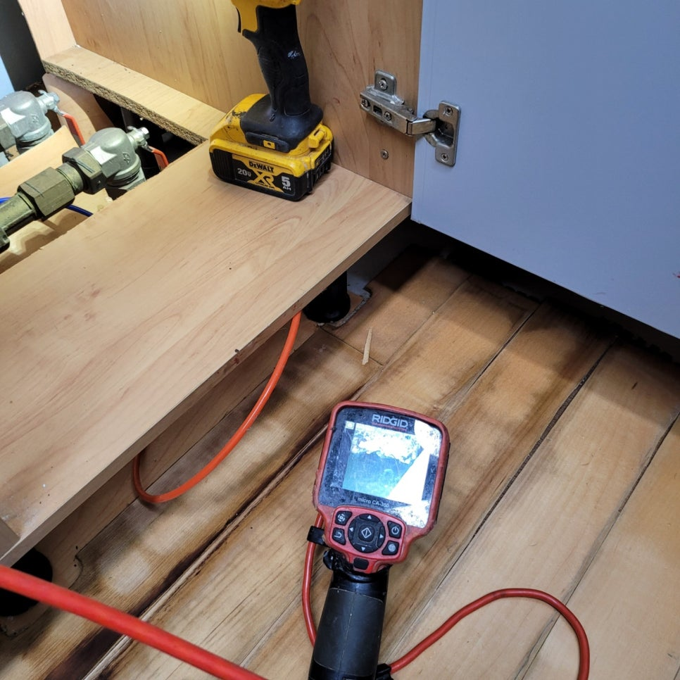
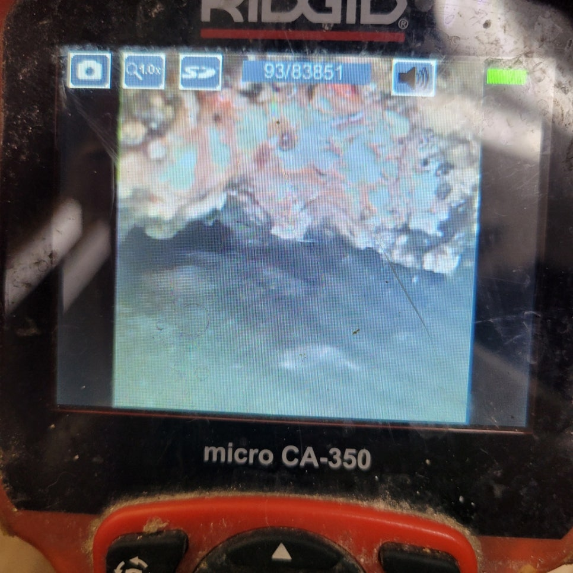
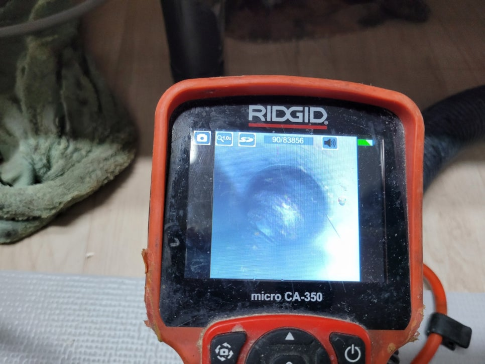
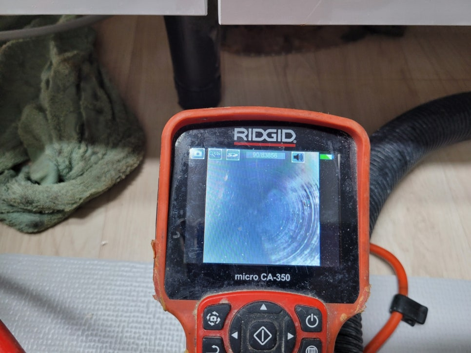
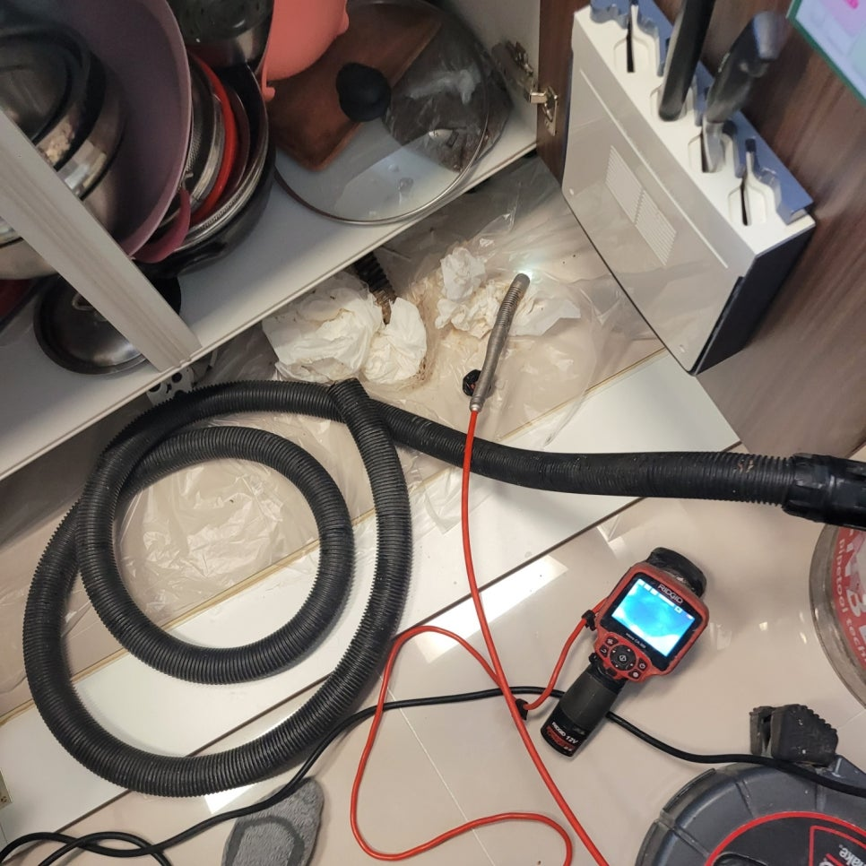
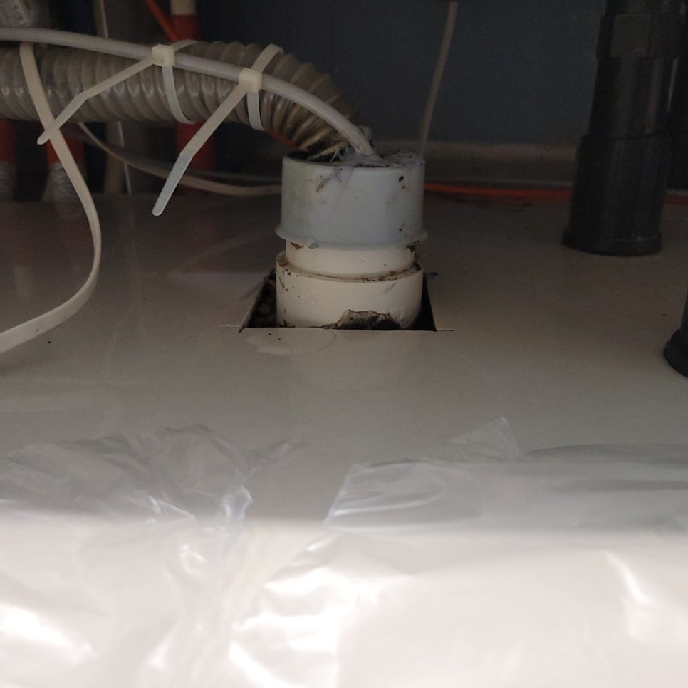

🏠 기흥구 동백동 싱크대막힘역류 해결 방치해두면 안됩니다!
용인 기흥 싱크대막힘 전문 시공 후기

📋 작업 개요
- 위치: 용인 기흥, 기흥, 용인
- 서비스 유형: 싱크대막힘, 하수구막힘, 배관막힘, 역류해결, 뚫는업체, 배관청소
- 작업 일시: 2023. 1. 15. 18:06
- 업체명: 하수구수사대 (010-5615-2118)
🔍 문제 상황
안녕하세요 하수구수사대입니다. 반갑습니다!
우리는 일상생활 속에서 자주 물을 사용하게 됩니다. 이러한 모든 하수들은 배관을 타고 흘러가게 되어 있는데요. 그중에서도 물을 자주 사용하는 곳이 바로 싱크대나 화장실이라고 할 수 있습니다. 그러므로 자연적으로 이러한 곳에서는 배관 막힘이 많이 발생할 수밖에 없습니다.
특히나 음식물을 다루는 싱크대에서는
음식물 찌꺼기로 인해서 이렇게 막힘이 발생하는 일이 더 흔하다고 할 수 있는데요. 이번에 문의를 해주셨던 기흥구 동백동 싱크대막힘역류 해결 고객님의 경우도 싱크대에서 어느 날부터 갑자기 물이 제대로 배수가 되지 않으면서 불편함을 느끼고 연락을 주신 곳이었습니다.

🔎 원인 분석
💡 전문가 진단: 특히나 음식물을 다루는 싱크대에서는
문제가 더 심각해지면서 늦기 전에 해결을 해보고자 급히 저희 업체 쪽으로 의뢰를 해주셨는데요. 기흥구 동백동 싱크대막힘역류 해결 사례를 통해서 어떻게 배관 막힘을 해결하게 되는지 설명드리도록 하겠습니다.
의뢰를 받은 현장에 도착을 해서 배관의 상태를 살펴보았는데요. 외관상으로 보기에는 별다른 문제가 없어 보였지만 좀 더 정확한 배관 내부의 상황을 알기 위해서는 배관 내시경 작업이 꼭 필요하다고 할 수 있습니다. 내시경을 이용해서 배관의 내부를 확인해 보면 상당히 심각한 상황들이 벌어지고 있는 현장들이 많이 있는데요.
기흥구 동백동 싱크대막힘역류 해결 이번 현장 또한 비슷한 상황이었다고 할 수 있습니다. 평소에는 아무 일 없이 괜찮았던 하수구가 갑자기 막히게 되거나 역류를 하는 상황이 발생을 하게 되면 누구든지 당황스러울 수 있습니다. 최근에는 시중에서 편하게 배수구를 뚫거나 청소를 할 수 있는 다양한 약품들이 나와있기 때문에 급하게 해결을 하려고 셀프로 시도를 하시는 분들도 많이 있습니다.
셀프로 해결을 해서 막힘의 원인이 해소가 된 상황이었다면 다행이지만 섣불리 해소를 하려다 오히려 상황을 악화시키게 되는 경우도 많이 있습니다. 그러므로 이러한 문제점들이 배관에서 조금씩 발견이 되는 경우에는 혼자서 해결을 하기보다는 신속하게 하수구 막힘 전문 업체로 의뢰를 하시는 것이 좋습니다.

🔧 작업 과정
대부분 셀프로 해결을 하는 경우에는
배관 속의 이물질들이 그대로 존재하는 경우가 많고 단순히 물이 배수될 정도만 해결이 되는 것이기 근본적으로 배수관을 막고 있는 원인을 해결하기에는 부족하다고 할 수 있습니다. 그러므로 이러한 막힘 작업은 전문 업체를 통해서 해결을 해야 배수구 관련 문제의 원인까지 한 번에 해결을 할 수 있게 되는 것입니다.
본격적으로 하수구 뚫음을 진행하기 위해서 내시경으로 막힘이 발생한 원인과 위치를 확인해 보기로 하였습니다. 배관 내시경은 우리가 육안으로 확인하기 힘들기 때문에 내부의 상태는 카메라를 이용해서 확인을 해야 하는 것입니다. 장비를 통해서 내부를 보면 그동안 막혀있던 여러 가지 이물질들이 발견될 수 있는 것인데요.
보통 이렇게 싱크대에서 발생을 하는 막힘의 경우는
우리가 음식을 조리하거나 설거지를 하면서 발생을 하게 되는 각종 음식물 찌꺼기와 기름때 덩어리들이 원인이 되는 경우가 많이 있습니다.
하수구마다 거름망이 있기는 하지만 작은 사이즈의 이물질들은 쉽게 통과할 수 있기 때문에 시간이 지나면서 조금씩 음식물 찌꺼기와 기름때 슬러지 덩어리들이 뭉쳐가면서 배관을 막을 수 있는 것입니다. 이번 현장도 오래된 이물질들이 하수관 전체를 막고 있었는데요. 이물질 제거를 위한 전문 장비를 이용해서 이물질들을 제거하는 작업을 하였습니다.
막힘의 원인이 되는 이물질들을 제거하니 다시 물의 흐름이 원활해지는 것을 볼 수 있었습니다.


✅ 작업 완료
주변 정리까지 말끔하게 하고 현장 마무리를 하였습니다.
경기도 용인시 기흥구 동백중앙로 191 8층 c8736호




⚠️ 주방 싱크대 배관 막힘 예방 수칙
- ✅ 기름기가 묻은 식기나 프라이팬은 설거지 전 키친타올로 반드시 기름때를 닦아내세요.
- ✅ 주기적으로 싱크대 개수대에 뜨거운 물을 가득 받아 한 번에 내려 배관 내부 기름을 씻어내세요.
- ✅ 배수구 거름망을 미세한 필터로 사용하시고 음식물 찌꺼기가 틈으로 새어 들지 않게 관리하세요.
- ✅ 베이킹소다와 식초를 뜨거운 물과 함께 일주일에 한 번씩 부어주면 배관 살균과 막힘 예방에 좋습니다.
💡 핵심 정리
- 확실한 장비 작업(내시경 점검 및 샤프트 스케일링)으로 원인을 뿌리 뽑습니다.
- 작업 후 1년 이내에 동일한 부위 재발 시 100% 무상 A/S 서비스를 보장합니다.
- 서울 · 경기 · 인천 전 지역에 24시간 언제든 긴급 출동할 수 있도록 항시 대기 중입니다.
❓ 자주 묻는 질문 (FAQ)
🚨 용인 기흥 싱크대막힘 문제로 고민이신가요?
정확한 원인 진단과 확실한 시공으로 재발 없는 해결을 약속드립니다.
24시간 긴급 출동 | 서울 · 경기 · 인천 전지역 | 1년 내 재발 시 무상 A/S